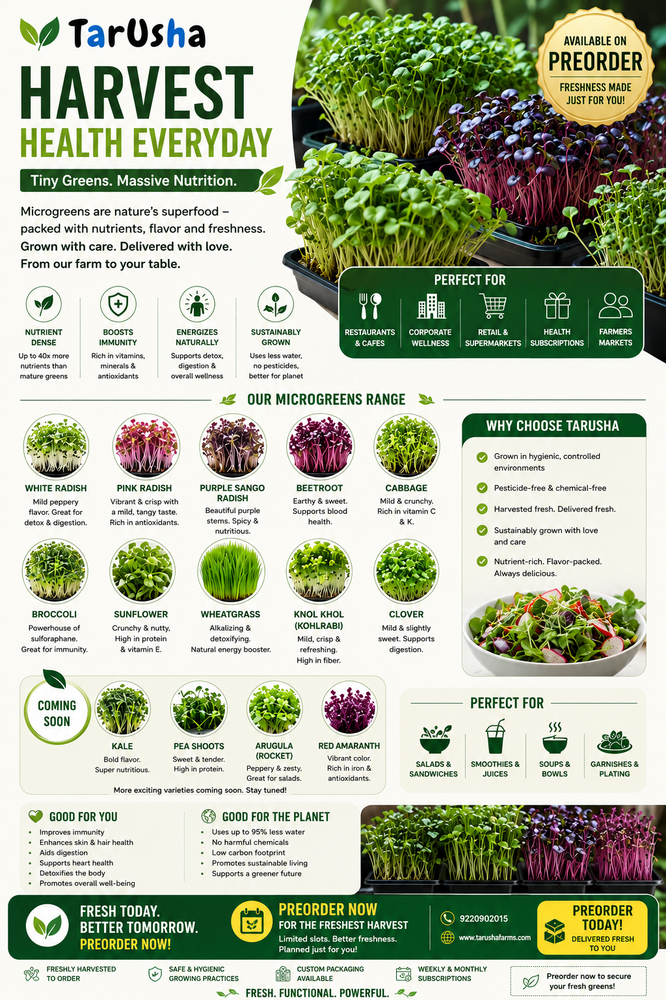

Microgreens.
Big Nutrition.
Bigger Possibilities.
From a sunny corner of your home to a customised commercial growing setup, microgreens make it possible to grow fresh, nutritious greens in surprisingly little space. TarUsha helps you understand what to grow, where to grow it and how to build a solution around your goals.

What Are Microgreens?
Microgreens are young edible seedlings harvested after their first leaves develop. They are small in size but can offer concentrated amounts of selected nutrients and distinctive flavours. Depending on the variety, they can add colour, texture and freshness to salads, sandwiches, smoothies, bowls and everyday meals.
| Comparison Factor | Sprouts | Microgreens (TarUsha Focus) | Mature Vegetables |
|---|---|---|---|
| Harvest Stage | Very early germination; harvested 3 to 7 days after seed cracks open. | Harvested after cotyledons develop and first true leaves appear, typically 7 to 21 days. | Full biological maturity; harvested 45 to 120+ days depending on crop. |
| Are Roots Eaten? | Yes. The entire germinated seed, rootlet, and shoot are consumed together. | No. Stems and tender leaves are cleanly cut just above the growing medium. Roots are discarded. | Usually no, unless it is a root crop like carrots or radish. Stems/leaves harvested. |
| Typical Growing Method | Soaked in water; grown in dark, humid jars or rotating drums with frequent rinsing. | Grown in shallow trays on soil, coco coir, or mats with natural/LED light and clean airflow. | Grown in deep soil beds or full-sized commercial hydroponic channels outdoors or greenhouses. |
| Common Culinary Uses | Crunchy toppings for sandwiches, raw tossed salads, and Asian stir-fries. | Vibrant garnish, salad base, sandwich crunch, gourmet pasta toppings, and nutrient-dense smoothies. | Primary cooked meal portions, bulk vegetable bases, roasted sides, and curries. |
Tiny Leaves. Concentrated Goodness.
Many microgreens contain vitamins, carotenoids, polyphenols and other bioactive plant compounds. Nutritional composition varies considerably by species, growing conditions, harvest stage and handling. Explore how selected varieties bring distinctive flavours and nutritional qualities to your plate.
Broccoli
Crisp & Mild Cabbage NoteWidely studied for its glucosinolate-derived compounds, particularly sulforaphane-related potential. Naturally rich in vitamins C, E, and K.
Red Cabbage
Sweet, Earthy & CrispRecognised for its intense violet-red anthocyanin content and antioxidant-related plant compounds. Provides vitamin C and beta-carotene.
Radish
Sharp, Peppery Horseradish KickKnown for its punchy pungency, containing vitamin C, zinc, phosphorus, and distinctive glucosinolates that give it its signature bite.
Sunflower
Nutty, Sweet & SubstantialOffers a substantial crunch with a balanced contribution of plant protein, dietary iron, magnesium, calcium, and vitamin E.
Pea Shoots
Sweet & Fresh Spring PeaDelivers delicate leafy tendrils rich in vitamins A and C, folic acid, and easily digestible plant-based amino acids.
Amaranth
Subtle, Delicate & Spinach-LikeNoted for its breathtaking magenta-fuchsia pigmentation, containing betacyanins, carotenoids, and mineral compounds.
Mustard
Zippy Wasabi PungencyFeatures natural mustard-oil glycosides and antioxidants that impart a clearing heat, along with vitamins A and E.
Wheatgrass
Intense, Sweet & HerbaceousConsumed as cold-pressed juice for its concentrated chlorophyll, vitamin A, C, and E content, and active botanical enzymes.
A Small Crop With a Lot to Offer
Discover why microgreens have captured the interest of health-conscious urban households, culinary chefs, and compact indoor growers alike.
Nutrient Density
Studies indicate that many microgreens can provide concentrated levels of vitamins, carotenoids, and polyphenols per gram relative to their mature counterparts.
Peak Freshness
Harvesting minutes before consumption preserves volatile aromas, crisp cellular turgidity, and delicate nutritional compounds with zero cold-chain degradation.
Fast Growing Cycles
Most varieties reach harvesting readiness within 7 to 21 days, enabling weekly continuous production schedules and rapid cycle testing.
Remarkable Space Efficiency
Growing in stacked multi-tier vertical racks maximizes output per square foot, making it ideal for urban apartments, kitchens, or small rooms.
Culinary Versatility
From simple daily rotis, dal, and sandwiches to high-end hospitality dining, microgreens add vibrant color, distinct texture, and clean freshness.
Exciting Variety
Experiment with an expansive palette of crops—sweet, spicy, nutty, or earthy—allowing you to personalize what you grow for your household or market.
You Don't Need a Farm to Start Growing
Microgreens are one of the most accessible ways to begin growing food. With suitable seeds, growing trays, a clean growing medium, water, light and basic hygiene, you can start small and learn as you grow.
Home Growing
A few trays positioned on a sunny balcony sill, dedicated kitchen shelf, or countertop with gentle ambient light. Perfect for daily household salads.
Kitchen & Restaurant
A compact vertical rack in the chef's prep area ensuring a steady supply of pristine living garnishes, edible greens, and custom menu elements.
Community & Schools
Hands-on educational growing modules for school STEM programs, society clubhouses, and corporate wellness initiatives focused on botany and food origin.
Commercial Production
Multi-tier stainless or powder-coated racks, scheduled crop rotation, dedicated LED spectrum lights, positive ventilation, and sanitary packaging workflows.
Start Small. Build Smart. Scale With Demand.
Microgreens can be explored as a small-scale business because production can begin with a limited number of trays and expand as demand develops. Instead of investing in a large facility from day one, growers can validate their market, understand their production costs and increase capacity in stages.
Pilot Phase
- Begin with 4 to 8 standard 10x20 growing trays.
- Test 3–4 popular varieties (radish, sunflower, mustard, cabbage).
- Gather direct feedback from local households, chefs, or gym peers.
- Accurately track seed, medium, water, electricity, and packaging unit costs.
Build Consistency
- Plan staggered sowings every 3–4 days for steady harvest flow.
- Standardise sanitation protocols and prevent mold issues.
- Establish recurring weekly deliveries for 10–25 committed customers.
- Monitor tray yield weights, germination percentage, and shelf stability.
Scale With Demand
- Add multi-tier vertical shelving units with dedicated full-spectrum LEDs.
- Introduce specialty varieties (amaranth, cilantro, sorrel, pea tendrils).
- Streamline harvesting, breathable clam-shell packing, and local cold logistics.
- Offer weekly subscription boxes, restaurant supply, and workshops.
What Determines Profitability?
Microgreens can represent an efficient agricultural pursuit, but financial viability depends on rigorous operational execution rather than theoretical calculations. Key variables to track include:
Local Market Demand
Proximity to conscious consumers, restaurants, and willingness to pay for living food.
Selling Price & Retention
Repeat subscriptions yield far higher margins than sporadic one-off retail sales.
Crop Yield per Tray
Proper seeding density and germination management directly dictate grams harvested per tray.
Input Costs
Bulk seed purchasing, growing media (coco coir/mats), and sustainable packaging materials.
Labour & Time
Time required for daily watering, tray cleaning, harvesting, packing, and client deliveries.
Utilities & Climate
Electricity consumption from LED lights, dehumidifiers, fans, and water filtration.
Spoilage & Waste
Minimising unsold batches through precise pre-order crop scheduling.
Food Safety Hygiene
Adherence to sanitary standards, clean water supply, and proper ventilation.
*TarUsha does not publish speculative income promises or guaranteed profit margins. Every business plan is developed around individual space constraints, input costs, and verified local market dynamics.
Your Space. Your Goals. Your Growing Plan.
There is no one-size-fits-all microgreens setup. TarUsha designs growing architectures shaped specifically around your available room, ambient environment, and intended harvest goals.
Available Floor Area
From a 2 sq ft kitchen counter corner to a 200+ sq ft dedicated indoor room.
Vertical Clearance
Utilising ceiling heights for 3-tier, 4-tier, or 5-tier vertical growing racking.
Lighting Dynamics
Balancing natural ambient daylight with optimized horticultural LED photosynthetic bars.
Airflow & Ventilation
Preventing moisture stagnation through quiet inline fans and proper tray spacing.
Water & Drainage
Configuring clean bottom-watering reservoir trays with easy drainage access.
Variety Selection
Selecting fast-growing and resilient crops matching your temperature and humidity.
Harvest Frequency
Aligning rotation cycles for weekly family consumption or daily commercial harvests.
Budget & Expandability
Modular starter kits engineered to seamlessly expand when your demand increases.
A Microgreens Solution Designed Around You
We begin by understanding what you want to achieve. Then we look at the space, constraints and practical requirements before recommending a solution that fits your needs.
Understand Your Objective
We begin with an in-depth conversation. Are you growing fresh greens for family health, supplying a restaurant kitchen, setting up a student STEM lab, or exploring a scalable commercial venture? Your objective defines every subsequent recommendation.
Assess Your Space and Facilities
We evaluate your floor dimensions, vertical ceiling height, natural light levels, ambient room temperature, ventilation, water purity, and electrical access. For larger setups, we review photographs, floor plans, or conduct a site assessment.
Define the Right Solution
We recommend the optimal balance of growing trays, food-grade substrates (coco coir, hemp, or reusable mats), rack layouts, full-spectrum LED bars, seed selections, and sanitation routines matching your specific budget.
Connect the Setup to Your Core Objective
We align the operational workflow with your daily routine: for households, simple 5-minute daily watering; for restaurants, predictable menu harvesting; for schools, curriculum-linked experiments; for entrepreneurs, structured pilot batch costing.
Support Implementation and Growth
Depending on the agreed project scope, TarUsha provides hands-on setup guidance, crop planning templates, hygiene SOPs, troubleshooting support, and advice on expanding your tray count as your confidence grows.
Not Sure Where to Start?
Let's Figure It Out Together.
Whether you have a sunny corner at home, an unused room, a restaurant kitchen or a commercial space, the first step is to understand what is possible.
TarUsha's microgreens consultation begins with your goals, your available space and the outcome you want to achieve. We then help you identify a practical way forward, from a simple starter setup to a structured growing project.
- Space Assessment: Personalized analysis of light, airflow, and layout possibilities.
- Crop Selection: Recommendations on varieties tailored to your family or target customers.
- Equipment & Racks: Sizing appropriate food-grade trays, grow lights, and shelving.
- Commercial Pilot Roadmaps: Unit cost tracking, hygiene SOPs, and phased scaling.
Transparent Advisory: Consultation scope and fees depend on the requirements and complexity of your project. Connect with our team to discuss your goals.
📍 Office: 2nd Floor, Khatana Palace, Sector 64, Gurgaon 122101
📞 Hotline: +91 9220902015 | ✉ Email: contact@tarushafarms.com
Request a Microgreens Consultation
Fill out the quick questionnaire below and our growing specialists will reach out to you.
Frequently Asked Questions
Everything you need to know about starting, caring for, and scaling a microgreens growing setup.
Microgreens are young edible seedlings harvested approximately 7 to 21 days after seed germination, once their embryonic seed leaves (cotyledons) or first true leaves develop.
They are distinctly different from sprouts and mature vegetables:
- Vs. Sprouts: Microgreens are grown in clean growing media with adequate light and airflow, and only the tender stems and leaves are harvested. Roots and seeds are discarded, significantly reducing moisture and bacterial risks.
- Vs. Mature Greens: While full-grown vegetables take 45–90 days to mature, microgreens are ready in roughly 2 weeks and deliver concentrated flavors, intense colors, and crisp textures.
While "superfood" is largely a marketing term, extensive scientific research (including studies from the USDA and agricultural universities) confirms that many microgreen varieties contain substantially higher concentrations of key vitamins, carotenoids, and polyphenols per gram than their mature counterparts.
However, microgreens are intended to enrich and complement a balanced, diverse diet rather than replace whole mature vegetables, fruits, and legumes.
The harvest cycle depends primarily on the seed variety and ambient temperature:
- Fast Harvest (7–10 days): Radish, mustard, broccoli, and kohlrabi.
- Medium Harvest (10–14 days): Sunflower greens, pea shoots, and red cabbage.
- Extended Harvest (14–21 days): Cilantro (coriander), amaranth, basil, and beetroot.
With staggered weekly sowings, you can maintain an uninterrupted supply of living greens year-round.
Yes, absolutely. Microgreens require zero outdoor soil, balconies, or garden land.
They thrive indoors in shallow, food-grade trays using clean coco coir or organic seed mats. A standard windowsill, kitchen countertop, or bookshelf receiving modest ambient daylight or a compact LED light bar is more than enough to cultivate crisp greens.
You can begin with less than 2 square feet of table or shelf space using a single 10x20 inch tray.
For households seeking continuous weekly harvests, a compact 4-tier vertical wire shelving unit occupying just 4 square feet of floor space can comfortably hold 12 to 16 trays, yielding fresh greens every single week.
We recommend starting with these hardy, resilient varieties:
- Radish: Fast 7-day turnaround with a punchy peppery bite and high germination reliability.
- Broccoli: Mild, pleasant flavor, dense growth, and highly resilient.
- Mustard: Rapid germination and robust resistance to moisture fluctuations.
- Sunflower: Hearty, nutty, and exceptionally crunchy greens that kids and adults love.
Yes. Because microgreens are cultivated in compact indoor micro-environments, you are not dependent on outdoor seasons or monsoons.
During hot summer months or humid rains in India, basic precautions such as gentle indoor ceiling fan ventilation, clean water, and avoiding waterlogging will ensure vigorous seedling growth 365 days a year.
Yes, microgreens present a viable compact urban farming opportunity. Key business advantages include low startup capital, high revenue density per square foot, and fast weekly turnover.
TarUsha helps entrepreneurs test the waters realistically: validate your customer demand (chefs, boutique cafes, fitness communities) with a small pilot first, track unit economics, and scale your rack capacity as repeat weekly orders expand.
Investment depends entirely on your scale and technical requirements:
- Home Hobby Kits: Minimal setup cost covering shallow food-grade trays, seed packets, organic coco peat, and a spray mister.
- Multi-Tier & Commercial Systems: Involves stainless steel vertical racks, specialized horticultural LED spectrum lighting bars, digital timers, bottom-watering irrigation, and ventilation.
TarUsha designs solutions around your exact budget and space. Request a consultation for an itemized setup assessment.
For beginner home growers, basic shallow planting trays with drainage holes, clean drinking water, organic coco coir or hemp mats, and ambient room light are all you need.
For semi-commercial or high-volume production, dedicated full-spectrum LED bars, bottom-watering reservoirs, digital automated timers, and quiet circulation fans ensure consistent germination rates and uniform harvest weights.
Yes, customization is our core strength. Every growing plan is custom-configured around your space constraints, ceiling height, ambient temperature, water quality, and intended consumption or sales volume.
We work with residential homes, restaurant kitchens, school STEM labs, corporate cafeterias, and commercial growers across Gurgaon, Delhi NCR, and India.
Yes. We do not simply supply trays and leave you to figure it out. Depending on your project scope, our consultation packages include:
- Standard operating procedures (SOPs) for seed soaking and blackout germination.
- Seeding density charts and watering schedules.
- Harvesting, cleaning, and shelf-life preservation protocols.
- Troubleshooting support for mold prevention and root vigor.
Your Microgreens Journey Can Start Small
Tell us what you have in mind. We'll help you explore a growing solution that makes sense for your space, goals and next steps.